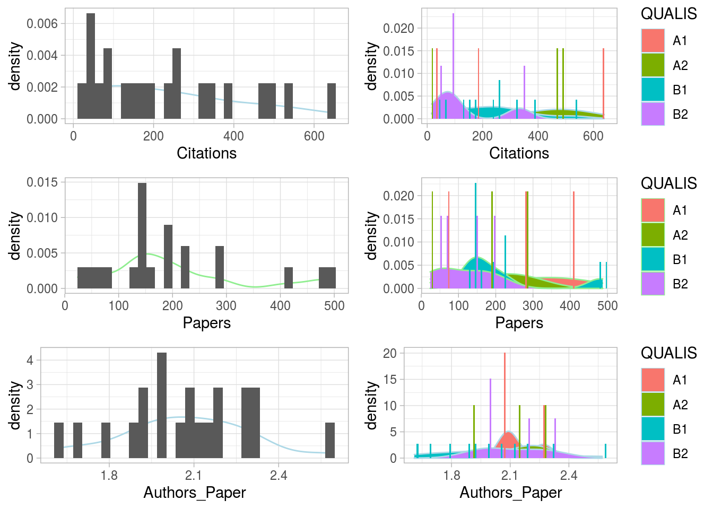
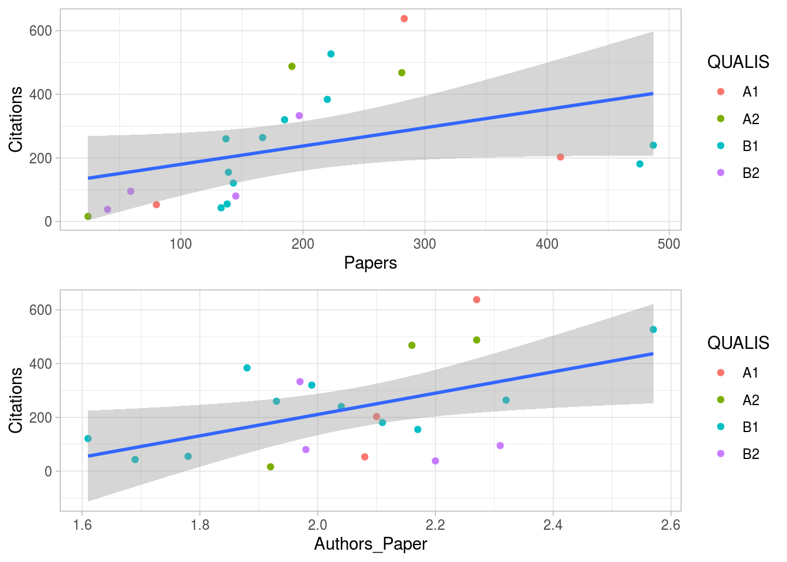

Chapter 3 Kata
3.1 Kata - Avaliar distribuição Open data OSF
Material suplementar do relato “Relações entre Acesso Aberto, QUALIS CAPES e desempenho de citação (Índices h, e, AW e hl Anual) em periódicos científicos brasileiros de Ciência da Informação – estudo documental exploratório”, publicado na Informação & Sociedade: Estudos, 30(1), 2020
3.1.1 Objetivo
Usar o dataset disponibilizado para verificar inferências secundárias do artigo.
3.1.2 Bibliotecas e dados
3.1.3 Análise exploratória
Analisamos a distribuição de citações, número de artigos, e número de autores por artigo. O tamanho amostral dificulta bastante fazer inferências. Assumiremos distribuição gaussiana (princípio de máxima de entropia) ou usaremos soluções não paramétricas (sem distribuição de base). A densidade estimada para número de autores por artigo parece mais comportada.
p_paperDist <- ggplot(infoj_df,aes(x = Papers))+
geom_density(color="light green")+
geom_histogram(aes(y=stat(density)),position="dodge")+
theme_light()
p_paperDistQualis <- ggplot(infoj_df,aes(x = Papers,fill=QUALIS))+
geom_density(color="light green")+
geom_histogram(aes(y=stat(density)),position="dodge")+
theme_light()
p_citDist <- ggplot(infoj_df,aes(x = Citations))+
geom_density(color="light blue")+
geom_histogram(aes(y=stat(density)),position="dodge")+
theme_light()
p_citDistQualis <- ggplot(infoj_df,aes(x = Citations,fill=QUALIS))+
geom_density(color="light blue")+
geom_histogram(aes(y=stat(density)),position="dodge")+
theme_light()
p_citDist <- ggplot(infoj_df,aes(x = Citations))+
geom_density(color="light blue")+
geom_histogram(aes(y=stat(density)),position="dodge")+
theme_light()
p_autpapersDist <- ggplot(infoj_df,aes(x = Authors_Paper))+
geom_density(color="light blue")+
geom_histogram(aes(y=stat(density)),position="dodge")+
theme_light()
p_autpapersDistQualis <- ggplot(infoj_df,aes(x = Authors_Paper,fill=QUALIS))+
geom_density(color="light blue")+
geom_histogram(aes(y=stat(density)),position="dodge")+
theme_light()
gridExtra::grid.arrange(p_citDist,p_citDistQualis,
p_paperDist,p_paperDistQualis,
p_autpapersDist,p_autpapersDistQualis,
layout_matrix = rbind(c(1, 2),c(3, 4),c(5,6)))## `stat_bin()` using `bins = 30`. Pick better value with `binwidth`.
## `stat_bin()` using `bins = 30`. Pick better value with `binwidth`.
## `stat_bin()` using `bins = 30`. Pick better value with `binwidth`.
## `stat_bin()` using `bins = 30`. Pick better value with `binwidth`.
## `stat_bin()` using `bins = 30`. Pick better value with `binwidth`.
## `stat_bin()` using `bins = 30`. Pick better value with `binwidth`.
Examinamos a associação entre (1) Citações e artigo e entre (2) Citações e Número de autores por artigo.
p_paperscit <- ggplot(infoj_df,aes(x = Papers,y=Citations))+
geom_point(aes(color=QUALIS))+
theme_light()+geom_smooth(method="lm")
p_authorscit <- ggplot(infoj_df,aes(x = Authors_Paper,y=Citations))+
geom_point(aes(color=QUALIS))+theme_light()+
geom_smooth(aes(x = Authors_Paper,y=Citations),method="lm")
gridExtra::grid.arrange(p_paperscit,p_authorscit)## `geom_smooth()` using formula 'y ~ x'
## `geom_smooth()` using formula 'y ~ x'